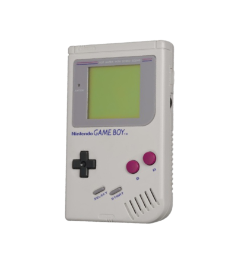

História de Criação
A história de Pokémon nasceu da nostalgia de Satoshi Tajiri, um jovem japonês que cresceu caçando insetos nos campos de Machida. Quando a urbanização destruiu esses espaços verdes, Tajiri sonhou em criar um jogo que permitisse às novas gerações vivenciar a alegria de colecionar criaturas. Ao ver o Game Boy da Nintendo, ele teve o estalo genial: usar o cabo de conexão do console não para lutar, mas para que os jogadores pudessem trocar seus monstros entre si, como se estivessem trocando figurinhas ou insetos reais. O desenvolvimento, feito por sua empresa Game Freak, foi um desafio hercúleo que durou seis anos. A equipe enfrentou falências iminentes e falta de recursos, mas contou com o apoio crucial de Shigeru Miyamoto, o criador de Mario, que sugeriu lançar o jogo em duas versões (Red e Green) para incentivar a interação social.